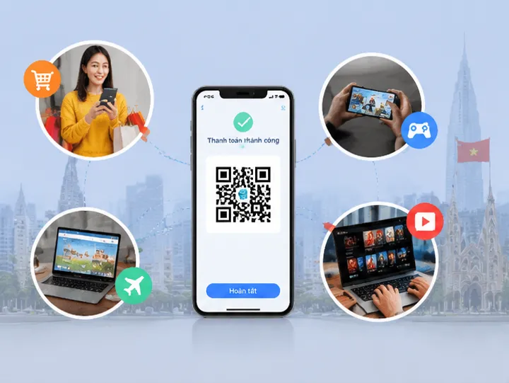
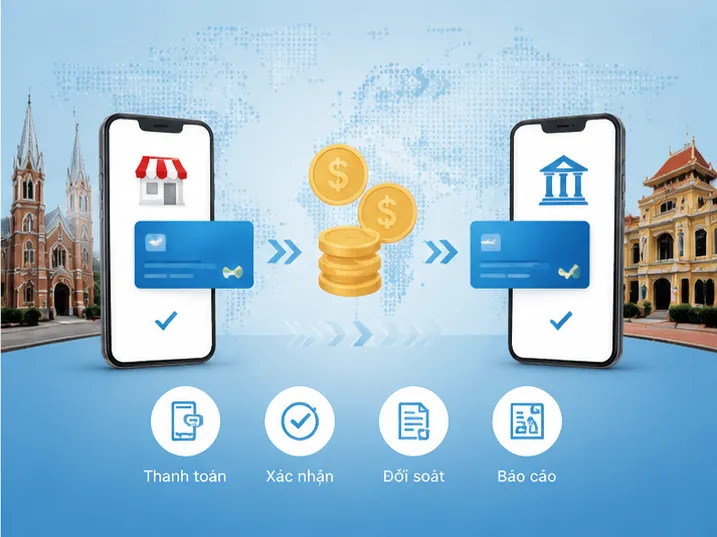
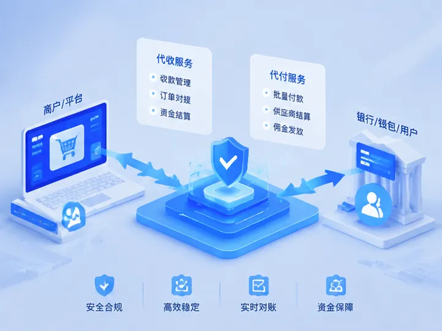

越南线上支付市场发展趋势
了解越南数字支付行业最新变化。
Vietnam Payment Solution
我们专注于越南本地支付领域，为企业客户提供专业的第三方支付通道。
通过稳定的支付接口和本地化支付网络，帮助企业降低支付接入成本，提高交易成功率,为客户提供越南代收通道和越南代付通道服务。
从支付通道接入、订单管理、交易通知到风险控制，我们提供完整的支付技术支持。
了解更多Vietnam Payment Methods
支持越南本地银行账户支付， 满足企业收款、付款及资金处理需求。
用户扫码即可完成付款， 提供便捷、高效的本地支付体验。
对接越南主流移动支付生态， 提升企业支付覆盖能力。
提供标准化接口， 快速完成系统开发与业务接入。

Payment Industry News
了解越南数字支付行业最新变化。

支付通道选择指南。

了解本地化资金解决方案。
Frequently Asked Questions
越南第三方支付是连接企业与越南本地支付网络的通道， 通过支付接口帮助企业实现线上收款、付款以及交易管理。
支持越南本地银行转账、二维码支付、电子钱包以及API接口支付， 满足跨境电商、游戏平台、互联网企业等不同业务需求。
企业提供业务需求后，我们会根据业务模式推荐合适的支付方案， 并提供API接口、技术对接以及上线支持。
越南代收服务适用于跨境电商、游戏、数字服务、 海外平台以及需要越南本地收款能力的企业。
根据企业业务需求和技术环境不同， 通常可以快速完成接口测试与系统上线。